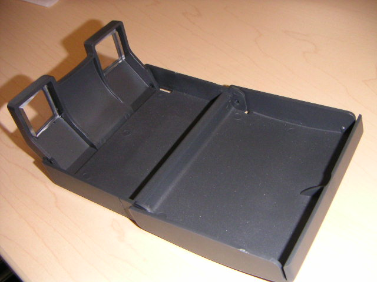
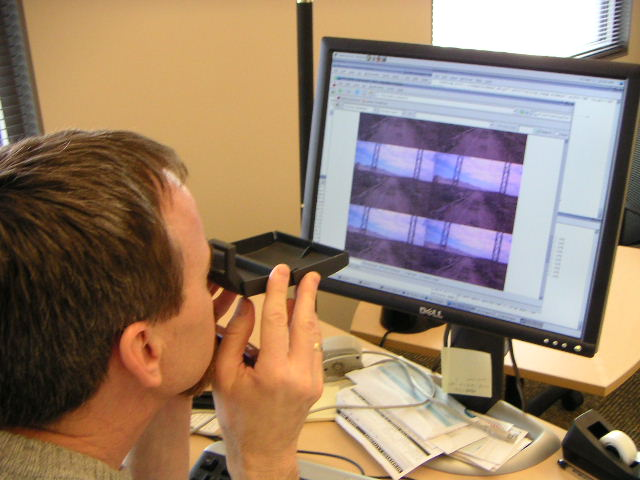
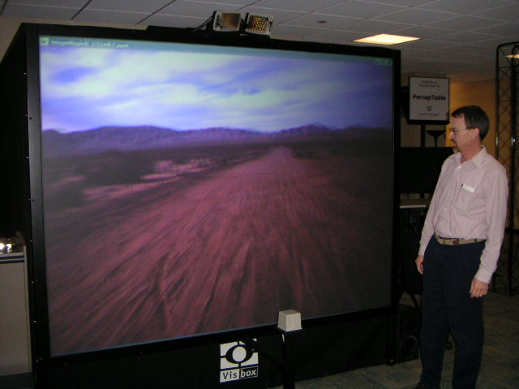

The SDA Lab was honored to participate in the Indy Robot Racing project in 2005. Here is an introductory page about the race and our lab's participation in the project.
Below we show some sample stereo images (left-right eye pair) from a test of one of the cameras being considered (thanks to CS Professor Steve Johnson). Apparently the exposure of the camera is automatically adjusting, going from overexposed at the beginning to good exposure at the end.
It's possible to view these left-right eye stereo images if you're patient and willing to look a bit goofy. Googling for 'view stereo pair' will produce pages on how to do this. One can simply use an inexpensive pair of stereoscopic viewers when looking at left-right stereo pairs (either printed as photos or on the computer screen). Here's a pair made by LOREO:
 Here are some sample left-right stereo frames, some sample image filters, and an animated gif movie snippet.
We have also enlarged these sample images, made movie snippets, and can then play them on a large screen stereo display such as the VisBox in our lab.
{kind=link}